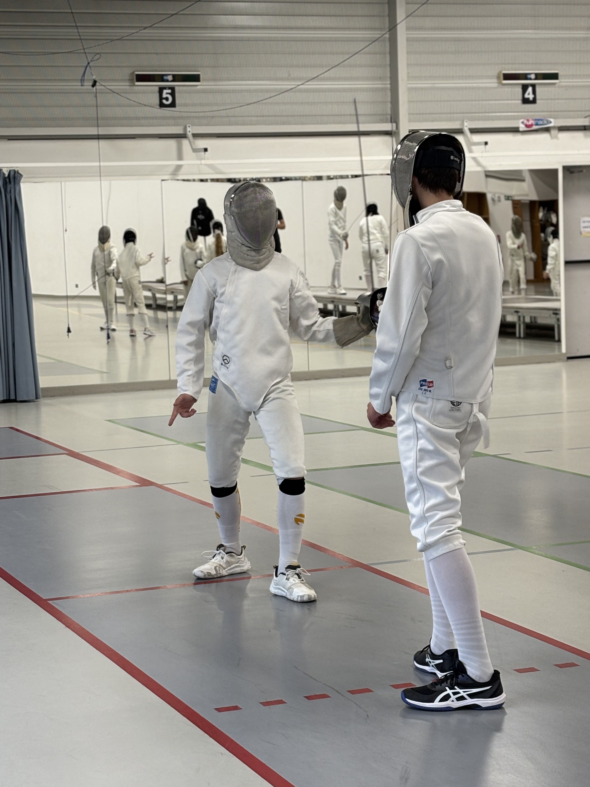
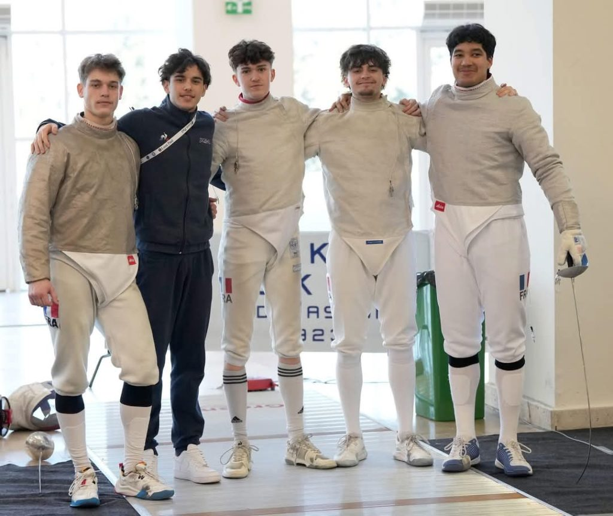
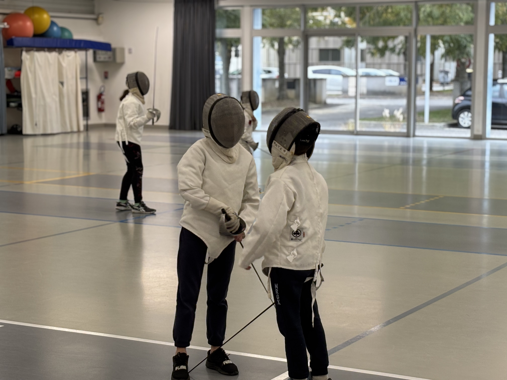
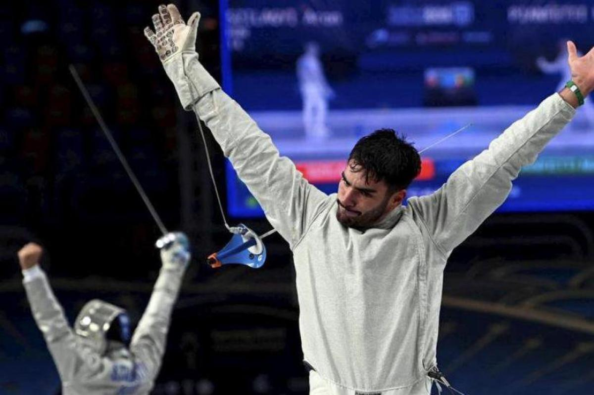
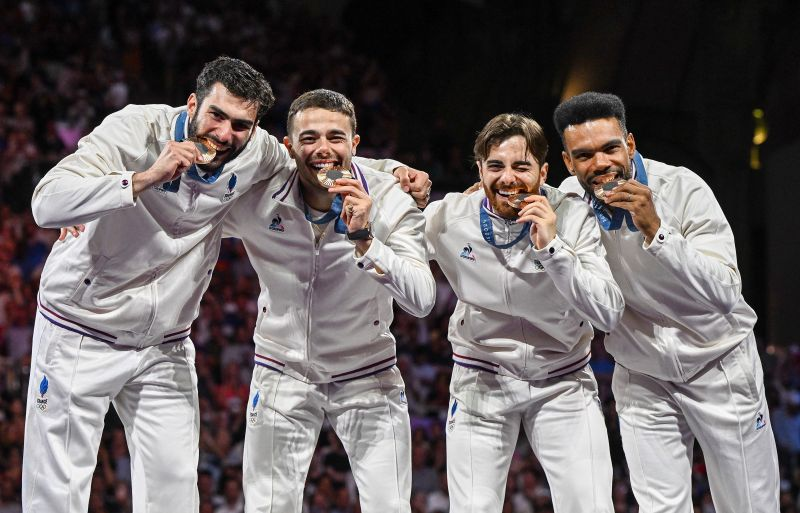

Respect

Collectif

Amitié

Dépassement de soi

Fondée en 1921, l’Amicale Tarbaise d’Escrime est devenue au fil des décennies une véritable référence du sabre en France et dans le monde. Le tournant majeur arrive en 1973 avec l’arrivée du maître René Geuna, fondateur de la section sabre et entraîneur emblématique du club. Son travail de formation, notamment grâce aux C.A.S dans les collèges de Tarbes, permet de repérer et d’accompagner de jeunes talents qui deviendront rapidement internationaux. Dès la fin des années 1970, les premiers sabreurs tarbais s’illustrent dans les compétitions juniors internationales, ouvrant la voie à une génération exceptionnelle. En 1983, le club décroche son premier titre de Champion de France par équipe, inaugurant une dynamique de succès qui ne s’est jamais arrêtée. L’ATE atteint la consécration entre 1999 et 2008 en réalisant un exploit unique : dix titres de champion de France consécutifs en 1ère division, un record jamais égalé. Ce palmarès national impressionnant — 181 titres toutes catégories confondues — s’accompagne également de nombreuses médailles mondiales et olympiques décroché par des tireurs formés au club, comme les frères Touya, Anne-Lise Touya, Nicolas Lopez ou encore Gildas Cousin. Cette histoire, marquée par les performances, l’exigence et la transmission, fait aujourd’hui de l’Amicale Tarbaise d’Escrime l’une des meilleures écoles de sabre au monde, fidèle à l’héritage du maître René Geuna, désormais membre d’honneur du club.
Maître d’arme
Maître d’arme
Maître d’arme

Maître d’arme